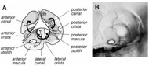
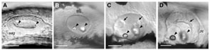

Name: semicircular canals
Abbreviation: scc
Synonyms: None
Figures:

4 day ear

Staging series live whole-mounts
Description: There are three semicircular canals in each ear, anterior, lateral (or horizontal) and posterior, arranged roughly orthogonally to one another. Projections of epithelium forming the hubs of each canal push inwards from the sides of the otic vesicle, beginning at the high pec stage (45h at 28°C), and fuse in the center of the ear between the long pec (52h) and pec fin (64h) stages at 28°C (Waterman and Bell, 1984). The canal itself is the fluid-filled toroidal space surrounding each hub. Although the topology of the canals is now complete, further outgrowth is required for them to attain their characteristic curved, canal-like shape. Each canal is associated with a crest-like sensory patch or crista, but in the day 5 larva there is not yet evidence of a swelling (ampulla) housing each crista.
Homologues:
Stages:
Parents (forms from): cranial placodal ectoderm (otic placode)
Children:
Group (member of):
Markers:
Publications:
Comments: None